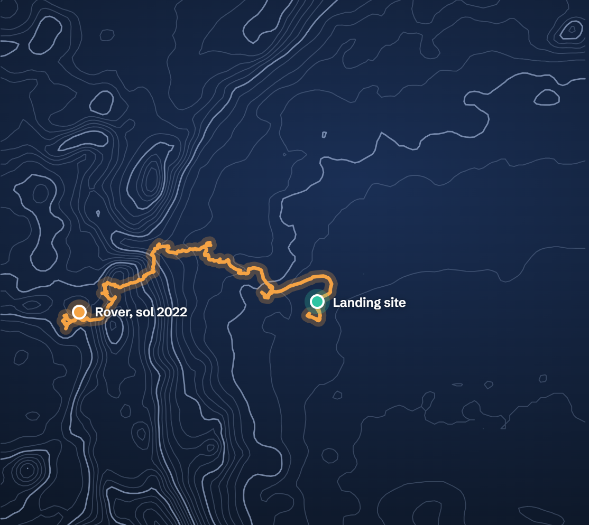

NASA International Space Apps Challenge 2026
COMPASS
Combined Orbital Mars Pathfinding & Astronaut Safety System
Know the way, and the way back.
Jezero Crater, Mars
Estimated safety, time, supplies and science for a person on foot
Live demo: compass-77kb.onrender.com

Jezero Crater from the MRO CTX terrain model, a line every 50 m, with the route Perseverance has driven
Impact
Creativity
Validity
Relevance
Presentation
Executive summary
COMPASS gives a person on foot on Mars one screen that answers: is it safe, when should I leave, and can I get back?
Charlie's Angels
Context
Help is 4 to 24 minutes awaySignal delay means the crew must decide on the spot
The data exists but is scatteredTen sources across several missions, made for scientists on Earth
Viewers show data, none plans a walkMars Trek, JMARS and MMGIS display; they do not score a route
Question
How can a person on foot on Mars decide where it is safe to walk, when to leave, and whether they can get back, while doing science along the way?
Solution
COMPASS: estimate, plan, explain
EstimateEstimated safety and sampling-likeness for 268,128 cells (60 m) of Jezero, from NASA data
PlanThree routes with the best start time, a supplies check and the point of no return
ExplainEvery score opens into its parts. Mission teams upload data and the estimators retrain
Impact
268k
map cells scored over about 30 by 30 km10
NASA and partner datasets in one view3
routes per request, each with a start time
How we are judged, and where to find it
1
ImpactWhat problem are you solving, and why does it matter?
Slide 3: no map exists for the first walk; today's viewers do not plan one
2
CreativityHow innovative or original is your approach?
Slide 4: one screen that estimates, plans and explains
3
ValidityIs your solution supported by relevant evidence and appropriate data?
Slide 5: ten datasets, tests on unseen map blocks, an independent rover check
4
RelevanceHow well does your project address the challenge you've selected?
Slide 6: a layered, integrated view built from several NASA missions
5
PresentationHow clearly and effectively do you communicate your solution?
Slide 7: every number explained, four real scenarios, a live demo
Sources: NASA Mars Trek, NASA/JPL MMGIS, NASA PDS Atmospheres Node, USGS SIM 3464, Herd et al. 2025. Counts from the COMPASS data pipeline. Judging criteria from the Space Apps Challenge rubric.
2
Impact
Creativity
Validity
Relevance
Presentation
Impact · the problem and why it matters
The first explorers on foot will have no one to ask, and no existing tool plans a walk across terrain, time, supplies and science
Charlie's Angels
Every past surface mission shows the same gap: the data existed but was not joined into one decision
| Mission or tool | What happened | COMPASS answer | Status |
|---|
| Apollo 14, 1971 | Crew turned back on foot with no live position on a terrain map | Your position, with oxygen and walk-back margin updating | Partial |
| Apollo 15 to 17 | A rover drive limit kept crews within walking distance of home, worked out by hand | The point of no return, computed from your real supplies | Built |
| Spirit, 2009 | Drove into soft ground and never got out | Dust proxy and geologic units, with sand rated lowest, feed the estimate | Partial |
| Opportunity, 2018 | A global dust storm cut solar power; weather was not tied to timing | Daylight and temperature scored for every start time | Partial |
| Curiosity | Sharp rocks damaged wheels; routes were re-planned afterwards | Rock hazards in planning from the start | Not yet |
| Mars Trek, JMARS, MMGIS | Excellent viewers, built for scientists on Earth | The same data turned into ranked routes with supply checks | Built |
A planner balances four things that live in separate places today
TerrainSlopes, roughness, soft ground, mapped from orbit at different datesCOMPASS: Estimated safety per 60 m cell
EnvironmentDaylight, temperature, dust, changing through the solCOMPASS: Sun, shadows and rover temperatures for your window
SuppliesOxygen, water, food and power set how far you can go and still returnCOMPASS: Needs vs. what you carry, with a 25% reserve
ScienceThe reason for the walk, spread across maps and target listsCOMPASS: Points of interest and a sampling-likeness estimate
Where COMPASS goes next
NowPlanning toolPlanners on Earth compare Marswalks with real NASA data
1 to 3 yearsAnalog field toolMars Desert Research Station, HI-SEAS: real walks train the model
3 to 5 yearsThe Moon firstSame engine with lunar data near the south pole
2030s onwardMars crew companionRuns offline on habitat or suit hardware
Takeaway: COMPASS turns data NASA already holds into a decision the crew can make locally, in minutes, and every route shows its way home.
Sources: team mission concept (history notes to be checked against NASA records before citing); status from the working prototype. Signal delay 4 to 24 minutes one way.
3
Judging criterion · Impact: What problem are you solving, and why does it matter?
Impact
Creativity
Validity
Relevance
Presentation
Creativity · our approach
One screen turns orbital data into ranked walking routes, each with a best start time, a supplies check and a point of no return
Charlie's Angels
What is new in the planner
1
Three genuinely different routesSafest, Best science and Fastest from A* search on a 60 m grid. Routes that come out the same are re-planned apart.
2
The best start time inside your windowThe computed sun and rover temperatures score every 15 minutes. Depart, arrive and back are shown for each route.
3
Supplies and the point of no returnOxygen, water, food, battery and sample bags with a 25% reserve. The last point from which you can still walk back is marked.
4
Every number explainedExplain opens estimated safety into 0.6 terrain + 0.2 daylight + 0.2 supplies, each with its inputs.
5
It learns from mission dataUpload traverse logs, sample results, weather or surface-change files and the estimators retrain.
The COMPASS planner on Jezero Crater: a trip from the landing site to a panorama site, two crew, on foot. Map imagery from NASA Mars Trek (MRO CTX).
Source: COMPASS planner screenshot (live prototype). Imagery: NASA/JPL/MSSS via NASA Mars Trek; rover traverse and photos: NASA/JPL.
4
Judging criterion · Creativity: How innovative or original is your approach?
Impact
Creativity
Validity
Relevance
Presentation
Validity · evidence and data
Ten NASA and partner datasets feed two estimators that are tested on unseen map blocks and checked against what the rover measured
Charlie's Angels
Ten datasets, each with a job
| Source | What it holds | What it feeds |
|---|
| MRO CTX and HiRISE | 20 m terrain model, 6 m and 25 cm imagery | Slope, roughness, basemap |
| Mars Odyssey THEMIS | 100 m night and day infrared | Dust proxy, thermal layers |
| OMEGA and CRISM | Hydrated-mineral detections | Mineral points and index |
| Mars 2020 traverse | 559 drives, 708 stops with measured tilt | Safety labels, independent check |
| Mars 2020 images, Mastcam-Z | 270 photos by site and drive | Photo pins, points of interest |
| Mars 2020 MEDA | Air temperature and pressure by hour | Daylight and temperature score |
| USGS geologic map SIM 3464 | 1,308 polygons in 14 units | Geology, resources score |
| Herd et al. 2025, PNAS | 24 real sample sites | Sampling-likeness labels |
How the estimators are tested
1
Unseen map blocks3-fold spatial cross-validation holds out whole 16 by 16 cell blocks.
Safety estimatorAUC 0.976Brier 0.052
Sampling-likenessAUC 0.945Brier 0.096
2
An independent check, not used in trainingMatch with the tilt Perseverance measured at 708 stops (Spearman):
Plain slope, no model
0.78 COMPASS ML estimator v1
0.74 Hand-written formula index
0.71 3
Scenario testsBad upload gives a clear error. Dust-storm weather takes 20 points off. Surface change drops flagged cells 100 to 59.
What this does not prove
- Safety labels are mostly rules; only 0.4% are real traverse cells
- There are no real "unsafe" labels: a rover drives only where it thinks it is safe
- Plain slope matches measured tilt slightly better than the model
- Sampling-likeness rests on 24 sites with approximate positions
So the output is named estimated safety, not a safety rating.
To strengthen it
- Real wheel-slip and hazard telemetry as labels
- Hold out whole sampling campaigns
- Compare with the rover's own hazard maps
Takeaway: the data is real and the tests are honest: the estimator is a calibrated, explainable guide for comparing routes, and we state where it is not yet proven.
Sources: COMPASS data pipeline and model reports (model v1). Spearman correlation with rover-measured tilt at 708 stops; blocked cells excluded (the in-app report counts them as unsafe and shows 0.76).
5
Judging criterion · Validity: Is your solution supported by relevant evidence and appropriate data?
Impact
Creativity
Validity
Relevance
Presentation
Relevance · fit to the challenge
The challenge asks for a layered, integrated view to plan a Marswalk with science; COMPASS delivers each element in one working planner
Charlie's Angels
What the challenge asks for, and what COMPASS delivers
| The challenge asks for | What COMPASS delivers | Status |
|---|
| A layered view of a location or route | Six layer groups (optical, thermal, topographic, geophysical, atmospheric, chemical) plus rover traverse, photos and your uploads; sun and shadows for the chosen time | Built |
| Data from several NASA science missions | MRO, Mars Odyssey and Mars 2020 data, with OMEGA/CRISM detections, the USGS geologic map and a published sample table | Built |
| Plan and carry out a successful Marswalk | Three routes, best start time, supplies check, point of no return, and a Walk view that tracks oxygen and the way home | Built |
| Do science along the way | Science stops, a sampling-likeness estimate trained on 24 real sample sites, hydrated-mineral points, and uploads of sample results | Built |
| Keep a human explorer safe | A hard 25 degree slope limit, daylight and temperature scoring, a 25% supply reserve, and every number explained | Built |
Layer view: terrain shadows for the planned start time over the estimated-safety overlay, with the rover traverse and photo pins.
Which mission feeds which layer
OpticalMRO CTX and HiRISE
ThermalMars Odyssey THEMIS
TopographicMRO CTX terrain model
GeophysicalUSGS map, Mars 2020 traverse
AtmosphericMars 2020 MEDA
ChemicalOMEGA/CRISM, Mastcam-Z
Takeaway: several missions, one integrated view, and one decision: where to walk, when to leave, and what is worth the trip.
Sources: COMPASS planner (live prototype); NASA Mars Trek, NASA/JPL MMGIS, NASA PDS Atmospheres Node, USGS SIM 3464, Herd et al. 2025 (PNAS). Imagery NASA/JPL/MSSS.
6
Judging criterion · Relevance: How well does your project address the challenge you've selected?
Impact
Creativity
Validity
Relevance
Presentation
Presentation · clear and open to try
Every number is explained, four real scenarios were run end to end, and the planner is live for you to try today
Charlie's Angels
Four real runs of the planner (estimated safety of the Safest route)
82
A short walk to the panorama sites3 km on foot, two crewAll three routes qualify; Safest leaves at 11:24 and is back at 16:38
75
A 13 km reach on footSame crew and windowAll routes rejected: supplies short; past 7.4 km the walk home does not fit
94
The same trip by roverTravel mode set to RoverSafest qualifies, leaving 12:23 and back at 16:41, with supplies to spare
66
Leaving after sunsetWindow 18:30 to 23:30No route offered: the daylight and temperature part is only 15 to 16 out of 100
Explain: nothing is hidden
Each score opens into its parts, its formula and its inputs, so a crew can see why a route ranks where it does.
The Explain view for the Safest route: 0.6 × 80 + 0.2 × 96 + 0.2 × 100 = 87.
Try it now
compass-77kb.onrender.com
- Open the planner and press Find routes
- Open Explain on any route
- Add your own data on the Upload page
Honest limits
- Jezero Crater only
- An estimate from orbital data, not a safety rating
- Weather is the last published rover data
- No rock-hazard or radio-coverage data yet
Charlie's AngelsThank you
Takeaway: COMPASS is a working, explained and honestly bounded planner, and the next step is real hazard data from mission teams.
Sources: scenario runs of the COMPASS planner on 14 November 2026 (model v1), from the landing site, two crew, round trip, science sampling. Scores are estimated safety, 0 to 100.
7
Judging criterion · Presentation: How clearly and effectively do you communicate your solution?
Impact
Creativity
Validity
Relevance
Presentation